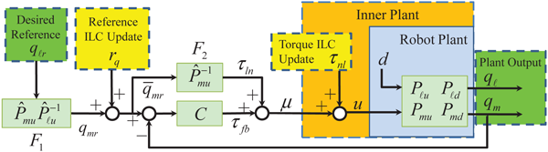
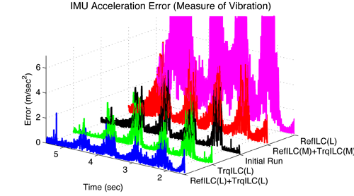

Iterative Learning Control
Motivation and Approach
To compensate for the repetitive tracking error of automated systems in repetitive industrial applications, the feedforward control inputs (τnl and rq below) are updated iteratively by processing the error information from previous iterations.

- Model industrial robot (blue shaded area "Robot Plant") as a MIMO system, where
- disturbance "d" is in a di erent channel from the control input "u", an
- real-time feedback signal "qm" is not the output of interest "ql"
- Design a hybrid dual-stage ILC scheme
- Torque ILC (TrqILC, yellow shaded area "τnl") to compensate for the model uncertainty& disturbances to make the inner plant (orange shaded area) behave as a nominal model
- Reference ILC (RefILC, yellow shaded area "rq") to compensate for the joint exibilit
- Ad hoc hybrid scheme: iteration-varying gain for dual-stage transition
Main Results

- Position tracking and vibration reduction: applications to both single-joint and multi-joint robots with joint elasticity [1, 4, 5] (above figure: proposed hybrid dual stage ILC scheme (RefILC(L)+TrqILC(L)) outperforms either single stage ILC (RefILC(L) or TrqILC(L)) or dual stage ILC with mismatched learning (RefILC(M)+TrqILC(M)) in the vibration suppression of FANUC M-16iB robot).
- Considering link (beam) exibility: application to large size LCD substrate transfer robot for vibration reduction [2].
- Learning for general motions: train multiple neural networks for predicting the model following error in a multi-joint robot without further learning or sensing after er training stage [3].
Recent Key Publications
- W. Chen, and M. Tomizuka, "Dual-Stage Iterative Learning Control for MIMO Mismatched System with Application to Robots with Joint Elasticity," IEEE Transactions on Control Systems Technology, DOI: 10.1109/TCST.2013.2279652
- C-S. Tsai, W. Chen, D-K. Yun, and M. Tomizuka, "Iterative Learning Control for Vibration Reduction in Industrial Robots with Link Flexibility," in Proceedings of the 2013 American Control Conference (ACC), Washington, DC, June 17-19, 2013
- J. Asensio, W. Chen, and M. Tomizuka, "Robot Learning Control Based on Neural Network Prediction," in Proceedings of the 2012 ASME Dynamic Systems and Control Conference (DSCC), pp. 1489-1497, October 17-19, 2012
- W. Chen, and M. Tomizuka, "Iterative Learning Control with Sensor Fusion for Robots with Mismatched Dynamics and Mismatched Sensing," in Proceedings of the 2012 ASME Dynamic Systems and Control Conference (DSCC), pp. 1480-1488, October 17-19, 2012
- W. Chen, and M. Tomizuka, "A Two-Stage Model Based Iterative Learning Control Scheme for a Class of MIMO Mismatched Linear Systems," in Proceedings of the 2012 ASME International Symposium on Flexible Automation (ISFA), paper No. ISFA2012-7199, June 18-20, 2012